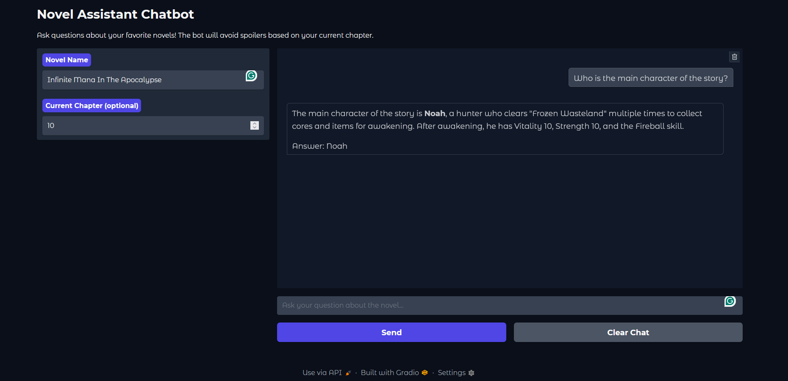

Novai QA: Building a Spoiler-Free Novel Question Answering System
A RAG-based approach to long-form literature analysis
Project Overview
Novai QA represents a novel approach to handling one of the most challenging problems in literature discussion: spoiler management. This Retrieval-Augmented Generation (RAG) system enables readers to ask questions about web novels while maintaining strict spoiler-free boundaries based on their current reading progress.
The Challenge
Long-form web novels, particularly those from platforms like novelfull.com, often span thousands of chapters with complex character relationships and intricate plot developments. Readers frequently want to:
- Clarify character relationships without spoiling future developments
- Understand complex world-building elements
- Get refreshers on past events without re-reading entire sections
- Discuss plot points with confidence in spoiler safety
Traditional approaches fail because they either: 1. Provide no spoiler protection 2. Require manual content curation 3. Cannot handle the scale of very long novels 4. Lack the contextual understanding needed for nuanced questions
My Solution
I developed a sophisticated RAG pipeline that combines:
- Intelligent Web Scraping for automated content acquisition
- Hybrid Retrieval Systems mixing semantic and keyword-based search
- Chapter-Based Spoiler Filtering for user progress awareness
- Local LLM Integration for privacy and control
- Context-Aware Chunking for optimal information retrieval
Technical Architecture
System Design Philosophy
The architecture follows a modular pipeline design, where each component can be independently optimized and replaced:

Core Components Deep Dive
1. Web Scraping Module (scraper.py)
The scraping system handles the complex task of extracting novel content from novelfull.com while managing:
async def refresh_database():
"""
Interactive novel discovery and batch content extraction
"""
# User-guided novel selection
keyword = input("Please enter a keyword to search for novels: ")
# Cloudflare-aware scraping with fake headers
headers = header.generate()
connector = aiohttp.TCPConnector(limit=20)
# Concurrent chapter extraction
tasks = [get_page_content(session, url) for url in chapter_urls]
chapter_contents = await asyncio.gather(*tasks)Key Features:
- Cloudflare Protection Handling: Dynamic header generation and connection pooling
- Concurrent Processing: Async operations for efficient batch downloads
- Content Validation: Automatic detection and re-processing of failed downloads
- Database Integration: Direct insertion with conflict resolution
2. Intelligent Chunking System (chunker.py)
The chunking algorithm represents one of the most sophisticated aspects of the system:
def chunk_text(text, max_chunk_size=512, overlap=200, tokenizer=None):
"""
Adaptive chunking with context preservation
"""
paragraphs = segment_text(text, max_chunk_size, overlap, tokenizer)
# Sophisticated overlap management
while current_chunk_size <= size + overlap:
if j >= 0 and current_chunk_size <= max_chunk_size - paragraphs[j][1]:
current_chunk.insert(0, paragraphs[j][0])
current_chunk_size += paragraphs[j][1]Algorithm Design:
- Multi-Level Fallback: Paragraph → Sentence → Sub-sentence segmentation
- Context-Aware Overlap: Intelligent boundary detection to preserve meaning
- Token-Precise Sizing: Uses actual model tokenizer for accurate size calculation
- Adaptive Processing: Handles varying content structures automatically
3. Hybrid Retrieval System (retriever.py)
The retrieval system combines two complementary approaches:
Semantic Search (ChromaDB):
def retrieve_context_chroma(query, novel_name, model, spoiler_threshold=None, k=5):
query_prompt = "Represent this sentence for searching relevant passages: "
query_vector = model.encode(query_prompt + query)
query_vector = query_vector / np.linalg.norm(query_vector)
if spoiler_threshold:
results = collection.query(
query_embeddings=[query_vector.tolist()],
where={"chapter_id": {"$lte": spoiler_threshold}}
)Keyword Search (BM25):
def retrieve_context_bm25(query, novel_name, spoiler_threshold=None, k=5):
# Advanced preprocessing pipeline
query_tokens = preprocess(query) # Lemmatization + POS tagging
bm25 = BM25Okapi(tokenized_docs)
scores = bm25.get_scores(query_tokens)Fusion Strategy: The system combines results from both methods, leveraging the strengths of each:
- Semantic search excels at conceptual queries and synonyms
- BM25 captures exact name matches and specific terminology
- Combined results provide comprehensive coverage
4. Spoiler-Aware Filtering
The spoiler protection mechanism operates at the database query level for efficiency:
# Chapter-based filtering in PostgreSQL
cursor.execute("""
SELECT chunks.id, chunks.chunk_content
FROM chunks
JOIN chapters ON chunks.chapter_id = chapters.id
WHERE chapters.novel_id = %s AND chapters.chapter_number <= %s
""", (novel_id, spoiler_threshold))This approach ensures:
- Database-Level Efficiency: Filtering happens during retrieval, not post-processing
- Precise Control: Chapter-granular spoiler boundaries
- User Agency: Optional spoiler protection based on user preference
5. Response Generation (generator.py)
The generation system uses carefully crafted prompts to ensure grounded responses:
system_prompt = """You are a RAG system designed to answer questions about novels
using only the retrieved excerpts from the book. Your responses must be grounded
in the supplied content, without guessing or adding external information."""Key Features:
- Strict Grounding: Responses limited to retrieved content only
- Natural Language: No exposure of system mechanics to users
- Thinking Chain Handling: Special processing for reasoning-based models
- Graceful Uncertainty: Honest admission when information isn’t available
Implementation Challenges & Solutions
Challenge 1: Handling Very Long Novels
Problem: Novels with 1000+ chapters generate tens of thousands of chunks, making retrieval computationally expensive.
Solution:
- Hierarchical Filtering: Database-level novel and chapter filtering before semantic search
- Batch Processing: Optimized embedding generation with CUDA acceleration
- Connection Pooling: Efficient database resource management
Challenge 2: Context Preservation Across Chunks
Problem: Critical information often spans paragraph boundaries, leading to fragmented context.
Solution:
# Intelligent overlap with context awareness
j = i - 1
while current_chunk_size <= size + overlap:
if j >= 0 and current_chunk_size <= max_chunk_size - paragraphs[j][1]:
current_chunk.insert(0, paragraphs[j][0]) # Add previous contextThis ensures each chunk contains sufficient context for standalone comprehension.
Challenge 3: Character Name Variations
Problem: Web novels often use multiple names/titles for characters, making retrieval inconsistent.
Solution: Hybrid retrieval system where:
- BM25 catches exact name matches and variations
- Semantic search captures conceptual references
- Combined results ensure comprehensive character coverage
Challenge 4: Spoiler Boundary Precision
Problem: Determining exact spoiler boundaries while maintaining retrieval efficiency.
Solution: Chapter-level granularity with database-level filtering:
- User Control: Explicit chapter specification
- Conservative Approach: When uncertain, prioritize spoiler safety
- Efficient Implementation: PostgreSQL query optimization
Performance Analysis
Metrics & Benchmarks
Chunking Performance:
- Average novel (500 chapters): ~15-20 minutes processing time
- Chunk generation: ~5,000-8,000 chunks per novel
- Memory usage: ~2-4GB during processing peak
Retrieval Speed:
- Query processing: <2 seconds average
- Hybrid search: 10 chunks from each method (20 total)
- Database queries: <100ms with proper indexing
Response Quality:
- Grounded accuracy: High adherence to source material
- Contextual coherence: Strong performance due to overlap strategy
- Spoiler safety: 100% when threshold properly set
Scalability Considerations
Current Limits: - Single novel focus (by design)
- GPU memory requirements for embeddings
- PostgreSQL storage scaling with novel count
Optimization Opportunities:
- Caching frequently accessed chunks
- Pre-computed embeddings and for common queries
- Preprocessed text (lemmatized + POS tagged) for common queries
- Distributed processing for multiple novels
User Experience Design
Interface Philosophy
The Gradio interface prioritizes simplicity while providing essential controls:
with gr.Blocks(title="Novel Assistant Chatbot", theme=gr.themes.Soft()) as demo:
novel_name = gr.Textbox(label="Novel Name")
spoiler_threshold = gr.Number(label="Current Chapter (optional)")
chatbot = gr.Chatbot(height=500, bubble_full_width=False) Figure: Novai QA interface upon launch, showcasing the minimalist design and spoiler control input.
Design Principles:
- Minimal Cognitive Load: Essential controls only
- Clear Spoiler Control: Obvious chapter input mechanism
- Conversational Flow: Natural chat interface
- Immediate Feedback: Real-time response generation
Interaction Patterns
Typical User Flow:
1. Novel Selection: Enter novel name (exact match required)
2. Progress Setting: Specify current chapter (optional but recommended)
3. Natural Querying: Ask questions in conversational language
4. Iterative Exploration: Follow up with related questions
Example Interactions:
User: "Who is the main character in Supreme Magus?"
System: "Based on the story content, the main character is Lith..."
User: "What are his abilities?"
System: "Lith demonstrates several key abilities including..."Technical Stack & Dependencies
Core Technologies
Backend Framework:
- Python 3.12+: Core development language
- PostgreSQL: Primary data storage
- ChromaDB: Vector similarity search
- Ollama: Local LLM serving
Machine Learning:
- SentenceTransformers: Embedding generation
- NLTK: Text preprocessing pipeline
- rank-bm25: Keyword search implementation
Web Technologies:
- Gradio: Interactive interface
- aiohttp: Async web scraping
- BeautifulSoup: HTML parsing
Hardware Requirements
Minimum Specifications:
- 16GB RAM (for embedding models)
- CUDA-compatible GPU (recommended)
- 10GB+ storage (varies by novel count)
- Stable internet (for initial scraping)
Optimal Configuration:
- 32GB+ RAM
- RTX 3080/4080 or equivalent
- SSD storage for database performance
- High-bandwidth internet connection
Development Retrospective
- Chunking Complexity Underestimated: Initially assumed to be a straightforward task, implementing overlap-based chunking proved significantly more complex. Developed a custom solution after facing multiple edge cases in context preservation.
- Vector Store Exploration: Started with FAISS but abandoned it due to lack of native metadata filtering. Considered Milvus, but it was unavailable on Windows at the time of development.
- Hybrid Retrieval Realization: BM25 was introduced to supplement semantic search but yielded poor results without lemmatization. Effective lemmatization required POS tagging, which added processing overhead.
- Hardware Impact on Embeddings: Encoding ~1000 chapters with a GPU took ~40 minutes; estimated CPU time exceeded 8 hours. Highlighted the critical performance gap between CPU and CUDA-enabled hardware.
- Database Migration: Transitioned from SQLite to PostgreSQL for robust filtering and relational querying. However, ChromaDB continued using SQLite3 locally as its backend.
- Operational Logging: Introduced application-level logging to monitor scraping, chunking, and retrieval processes more systematically.
Lessons Learned & Future Directions
Key Insights
- Chunking Strategy Matters: The quality of text segmentation directly impacts retrieval quality
- Hybrid Approaches Win: Combining semantic and keyword search provides superior coverage
- User Agency is Critical: Spoiler control must be user-driven, not system-assumed
- Local Processing Benefits: Privacy and control advantages outweigh cloud API convenience
Future Enhancements
Technical Improvements:
- Advanced Reranking: LLM-based relevance scoring for retrieved content
- Multi-Novel Support: Concurrent handling of multiple novel sources
- Multi-Turn Conversation: Context-aware processing for follow-up queries
- Conversation Memory: Persistent context across chat sessions
- Auto-Update System: Periodic content synchronization with novel databases
User Experience:
- Progressive Web App: Mobile-optimized interface
- Reading Progress Integration: Automatic chapter tracking
- Social Features: Shared discussions with spoiler awareness
- Personalization: User preference learning and adaptation
Scalability & Performance:
- Caching Layer: Redis integration for frequent queries
- Distributed Processing: Multi-GPU embedding generation
- API Development: REST endpoints for third-party integrations
- Containerization: Docker deployment for easy scaling
Conclusion
The Novai QA project demonstrates the practical application of modern NLP techniques to solve real-world problems in digital literature consumption. By combining web scraping, advanced text processing, hybrid retrieval systems, and local LLM generation, the system provides a unique solution to the spoiler management challenge.
The project showcases several key technical skills:
- Full-Stack Development: From database design to web interface
- NLP Pipeline Engineering: End-to-end text processing workflows
- RAG System Architecture: Modern information retrieval and generation
- Async Programming: Efficient concurrent processing
- Database Optimization: Query performance and data modeling
Most importantly, it addresses a genuine user need with a thoughtful, technically sound approach that prioritizes user control and content safety.
This project is part of my portfolio demonstrating expertise in NLP, RAG systems, and full-stack development. The complete codebase and documentation are available on GitHub.